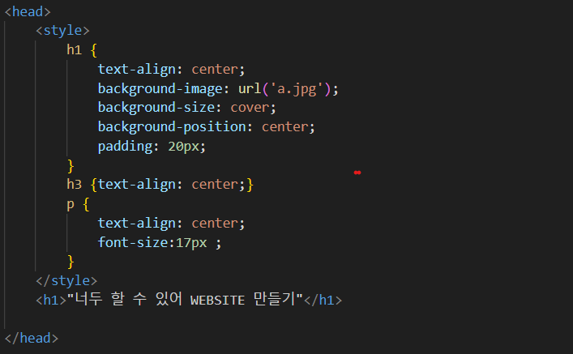

head 태그는 메타데이터의 컨테이너라고 생각하면 돼
메타데이터란 한 데이터를 설명해주는 다른 데이터야
따라서 head 태그는 데이터의 데이터를 적는 곳이야
head 태그는 html 태그와 body 사이에 위치하는데
주로 문서 제목, 문자 집합, 스타일,
스크립트 및 기타
메타 정보를 정의하는데 쓰여.
이러한 html의 메타 데이터는
사용자들의 화면에 보이지 않아.
이제 우리가 작성한 코딩에서 head태그를 사용한
부분을 보여줄게

이 사진을 보면 위에 head 태그를 사용한 것이 보이지?
head 바로 밑에 style이라는 태그를 썼는데 이 태그는 다음
부분에서 소개해 줄게
SSWC HOME으로 돌아가기